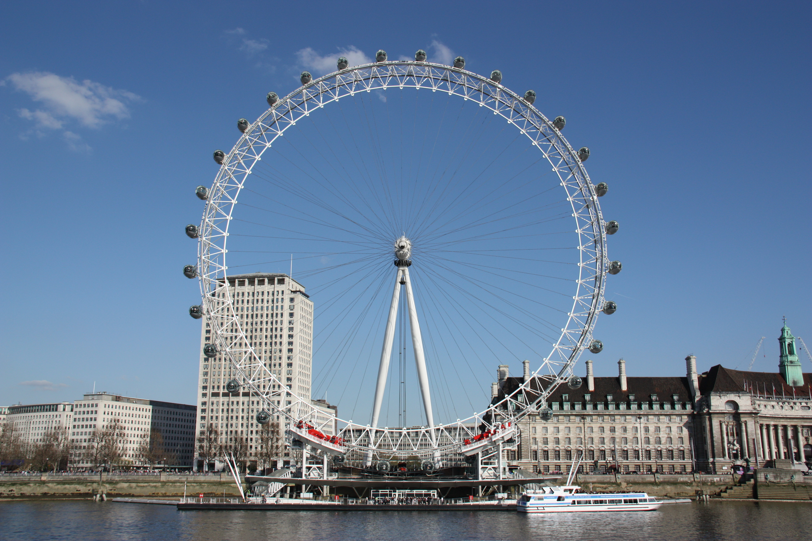
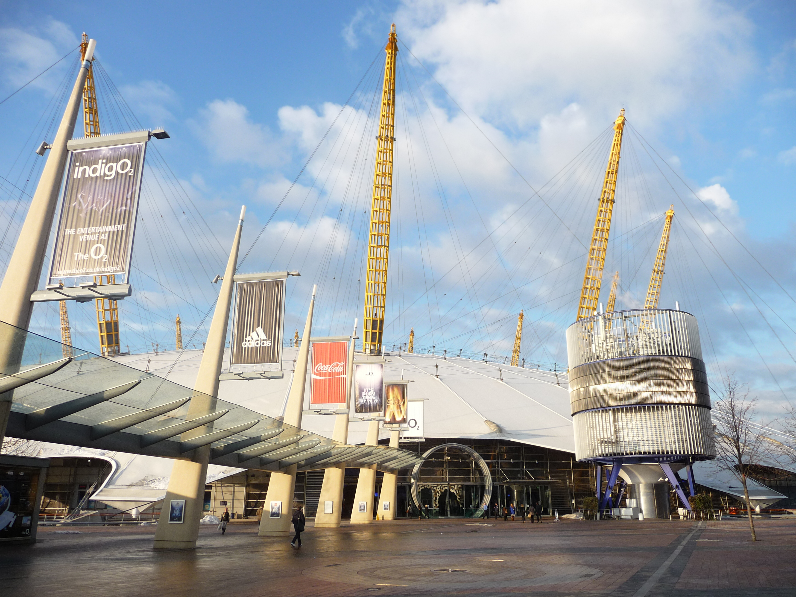
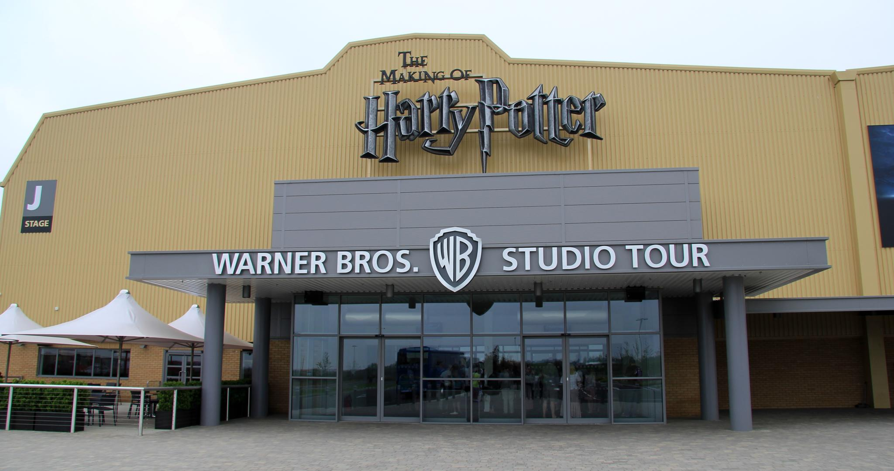
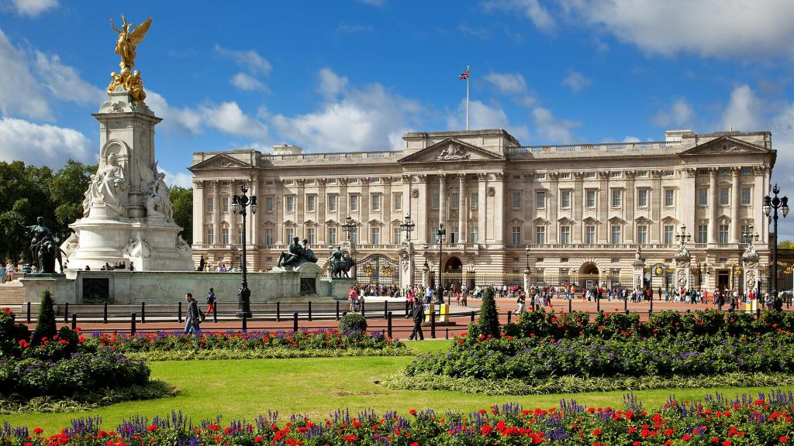
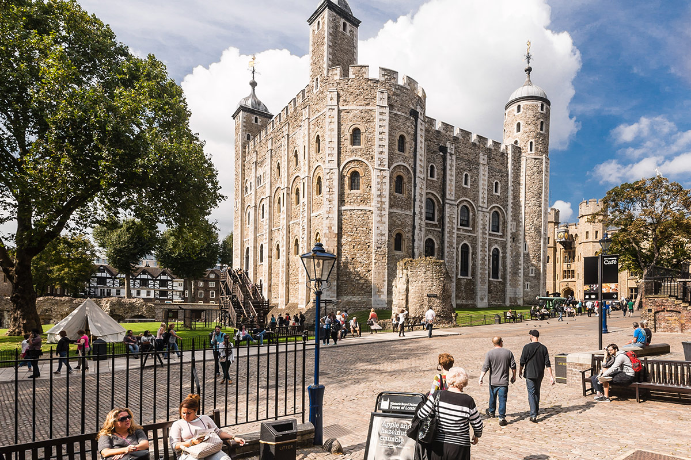
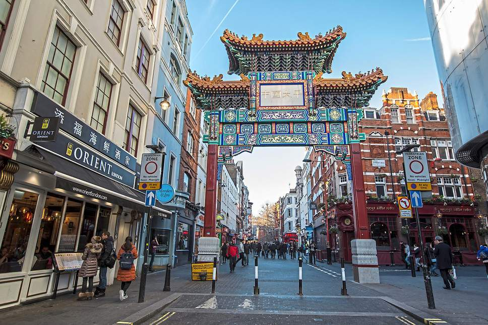
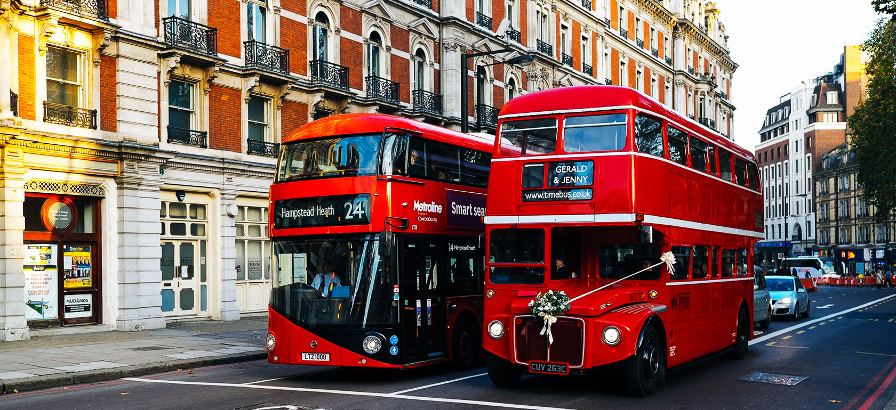
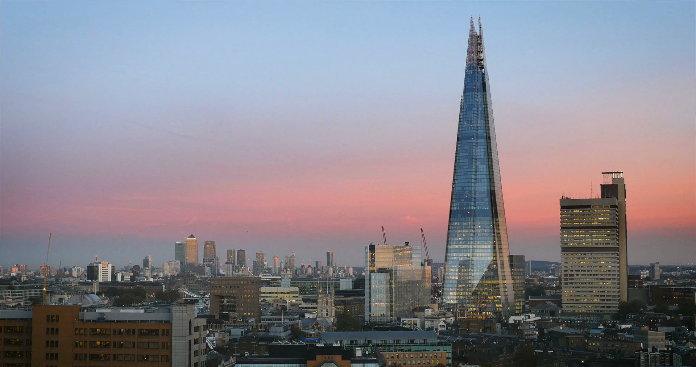
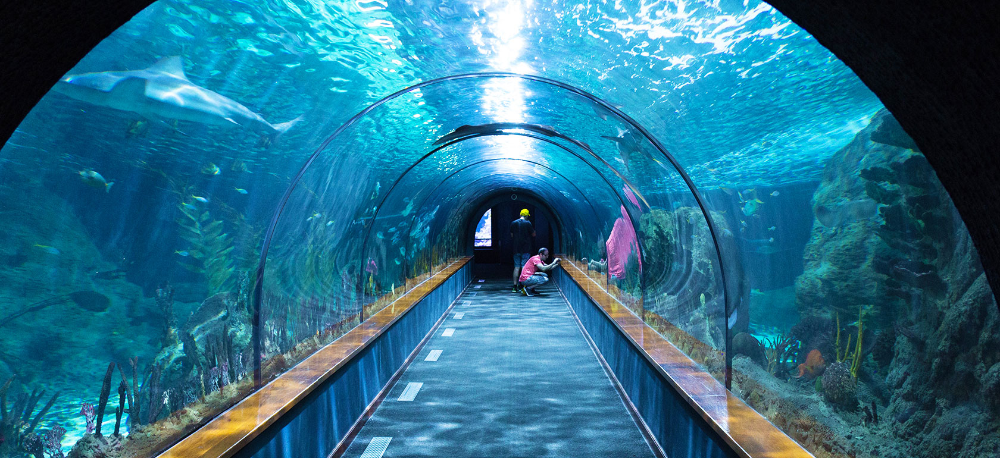
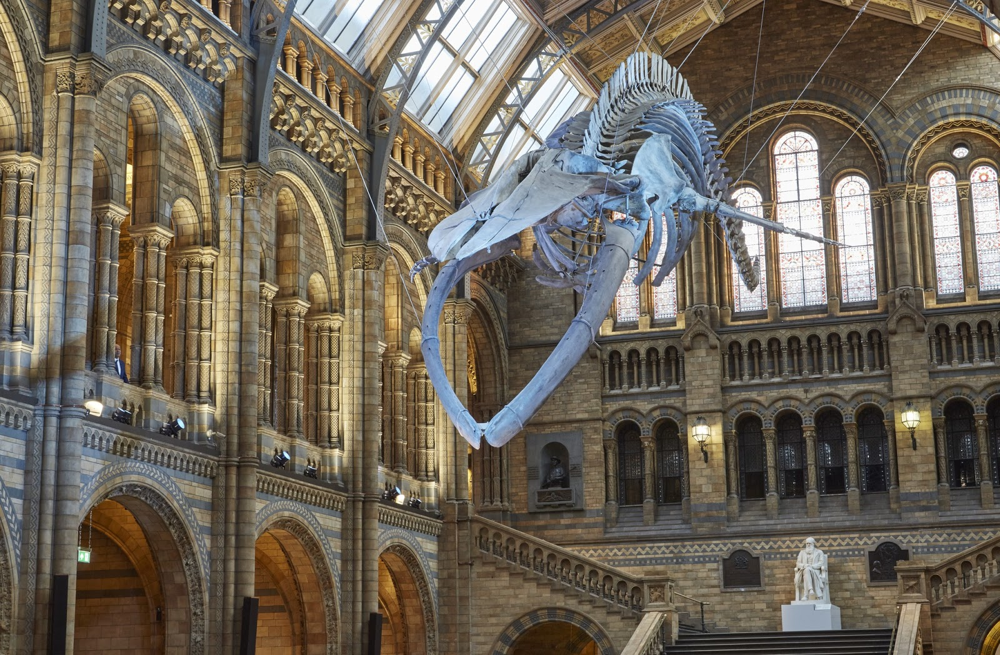

Places to Visit in London
There are thousands upon thousands of things you can do and places you can visit here in London! Here is a quick rundown of some of our favourites.
The London Eye
A big part of the London skyline, The Coca-Cola London Eye is home to some of London’s best views!. With over 32 capsules (each holding up to 25 people), this breathtaking monument is one of London’s most popular attractions.
Fun Fact: The London Eye was not the first big wheel. The first one was built in 1895 and it was called the “Great Wheel” whereas the London Eye was built in 1998. Additionally, the London Eye is actually called the Coca-Cola London Eye after beverage company Coca-Cola signed a sponsorship deal.
Big Ben
London’s most iconic landmark! **currently under construction
Fun Fact: Big Ben is the name of the bell, not the clock tower. It was meant to be called “The Clock Tower”.
The Millennium Dome
Visit the now named “O2 Arena” and take the challenge to make the 52-metre climb to the top for an amazing view of the city! If you happen to stop by at night, try to catch one of the many concerts, shows, or sporting events!
Fun Fact: The Millennium Dome is the biggest dome in the world.
Warner Bros. Studio Tour - The Making of Harry Potter
A behind-the-scenes tour of the Harry Potter film studio. You get to see some of the iconic costumes, props, and even the artwork behind the movie series!
Buckingham Palace Tour
Take this chance to visit the official residence of the Queen, and see the royal progression throughout the ages.
Tower of London
Are you interested in experiencing and uncovering London’s exciting years of history? Then the Tower of London is for you! With the no brainer option to grab an affordable audio tour, grasp an extensive tour of London’s jewel house, place of execution, arsenal, and the zoo!
Chinatown
London is home to many cultures and backgrounds and the Chinese culture is nothing short of this! Come experience this encompassing atmosphere in the local Chinatown, where food, shows, and festivals captivate the hearts of any visitor.
London Dungeon
Discover some of London’s darkest history at the London Dungeon where “prisoners” (much like yourself) can experience live actors, thrilling amusement rides, and overpowering special effects.
Hop-on hop-off Bus Tour
This is hands down the perfect way to accustom yourself with the city. For as low as £2, you can get yourself on a 24-hour tour (which of course you hop off at any time) of London’s landmarks.
The View from The Shard
The London Eye seem too small for you? Well, let me present to you, The View from the Shard. Rise 800ft above the city of London and view the panoramic 360 degrees view for up to 40 miles in each direction. This one is truly amazing.
SEA LIFE London
Come down to London’s biggest and most exciting aquarium, spotting up to 400 different types of marine animal species. If you’re brave enough, you can even attempt to walk the “shark walk”.
Free Museums
Home to some of the most exquisite museums in the world, London is famous for offering some of the most interesting walkabouts in over 25 FREE museums!! Here is a list of only some of the museums that offer FREE ADMISSION!
- British Museum
- Natural History Museum
- National Gallery
- Science Museum
- Tate Modern
- Museum of London
- Imperial War Museum
- V&A Museum of Childhood
- Royal Air Force Museum
Fun Fact: London has over 170 museums, and a majority of them are free!